Food and Flower Collections
Once you get to Pupsville, you unlock two Collector books: Food and Flowers. The Food Collector is Darna in the Restaurant, and the Flower Collector is Cherry, in her house. You can start finding the items for these collections in Green Meadows, and almost every location beyond that isn't a town. In spite of the name, you can't actually eat "Food" items — their sole purpose is to be collected for the Scent List (in your menu) and the Collector books.
You find Food and Flowers by sniffing. Each of these items has specific locations where it appears, but not all scent spots in an area will yield their items when the map is loaded. Because of this, there is rarely any actual strategy to finding Food or Flower items. You simply go to where they are and dig them up, and if they don't appear you return later to try again.
Food Book
-
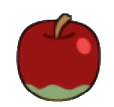
-
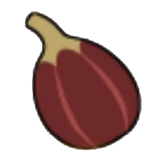
-
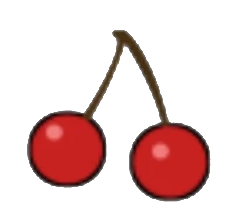
-
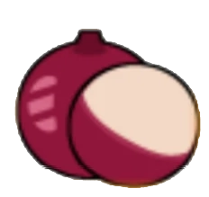
-
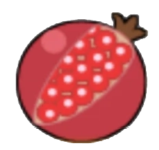
-
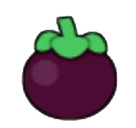
-
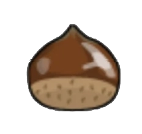
-
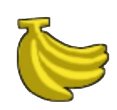
-
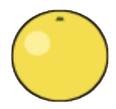
-
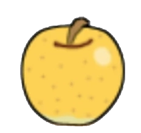
-
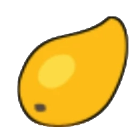
-
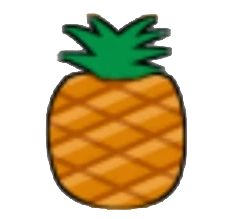
-
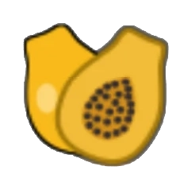
-
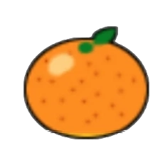
-
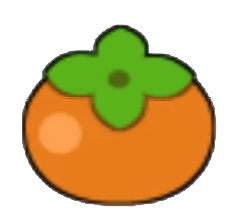
-
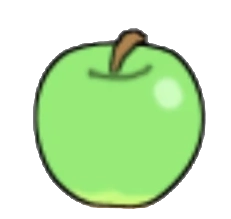
-
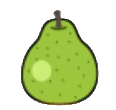
-
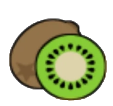
-
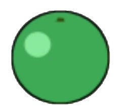
-
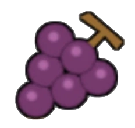
-
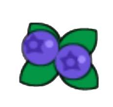
-
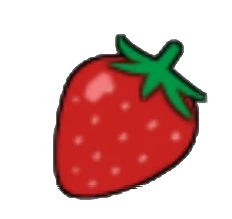
-
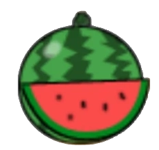
-
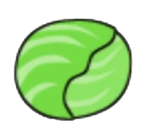
-
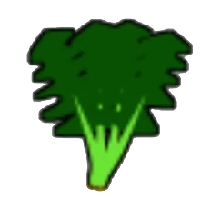
-
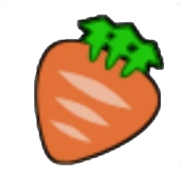
-
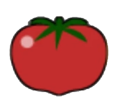
-
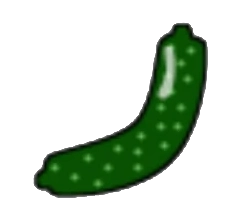
-
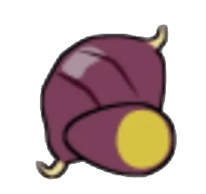
-
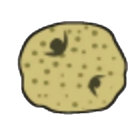
Food Collector Rewards
There are two categories in the Food book: the Fruit collection (Apple through Melon) and the Vegetable collection (Cabbage through Potato). Completing a category rewards you with an Anc Water, a very powerful healing item that fully restores your health. Because there are two categories, Darna will give you two Anc Waters if you complete the book. Additionally, for getting every item in the book, you will get the Food Master Hat for your dog to wear.
Apple
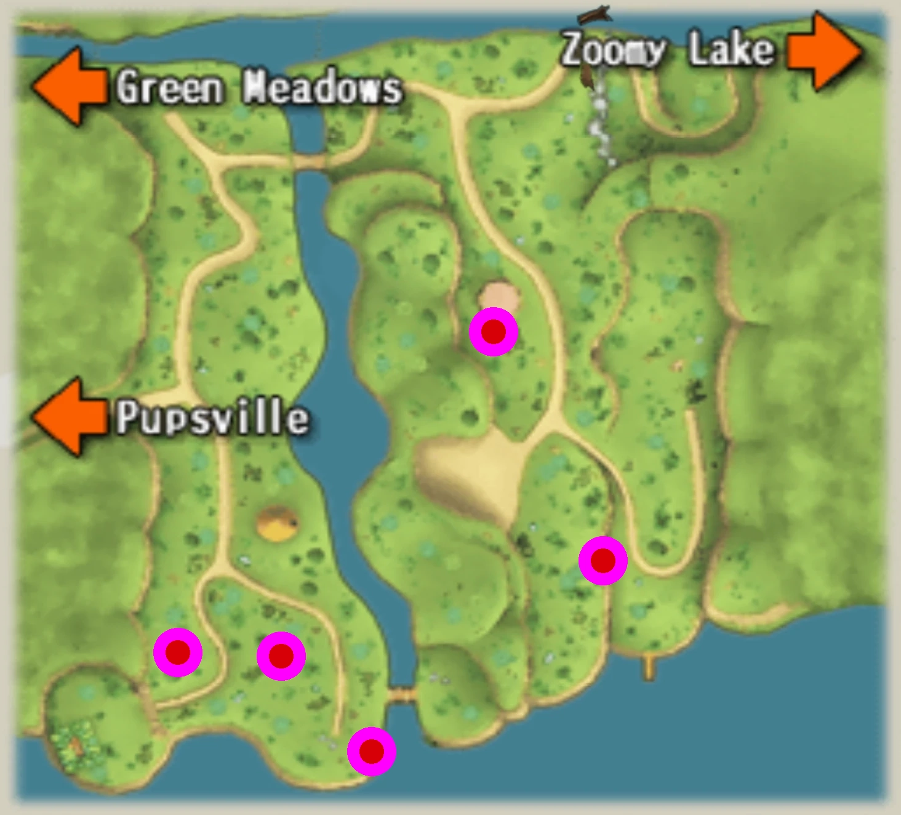
Apples can be found in grassy patches in Treely Woods. Since both gorillas are close to where Apples can appear, it may be a good idea to deal with them before starting sniffing. If you're not comfortable with wild animals yet, a convenient spot to get an Apple is outside the gates of Obaba's House, just south of Pupsville.
Fig
Peach
Cherry
Passion Fruit
Litchee
Pomegranate
Mangosteen
Chestnut
Banana
Grapefruit
Lemon
Apple Pear
Mango
Pineapple
Papaya
Orange
Persimmon
Apricot
Durian
Star Fruit
Green Apple
Pear
Kiwi
Green Grape
Grapes
Blueberry
Strawberry
Watermelon
Melon
Cabbage
Lettuce
Spinach
Carrot
Pumpkin
Tomato
Cucumber
Eggplant
Sweet Potato
Potato
Flower Book
In addition to the listed locations, all Flowers can be found in the Ancient Grove.
Flower Collector Rewards
Like with the Food collection, there are two categories of Flowers: those that Bloom in cool seasons and those that Bloom in warm seasons. Since there are two categories, you can get up to two Anc Waters from the Flower collection. Additionally, for completing the Flower book, you get the Flower Master Decorations to wear.
Dandelion
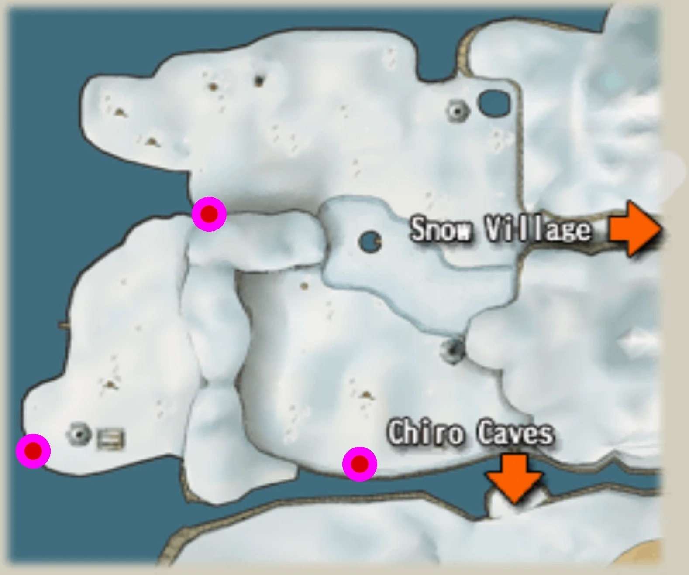
Dandelions can be found in West Chilly Field. The safest spot is in the northwest, by the penguins near the wall. Be sure to watch your dog's temperature while sniffing!